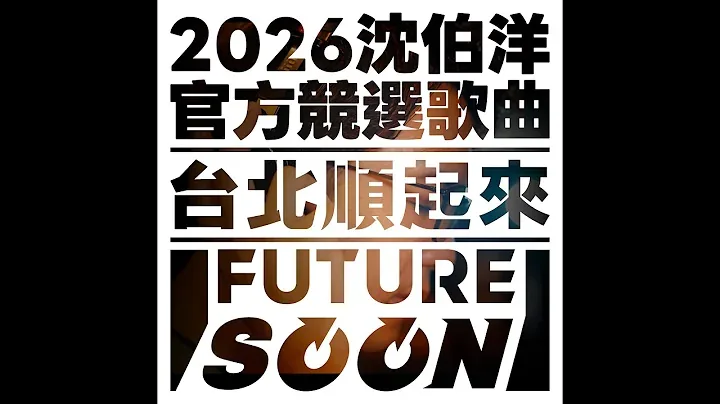
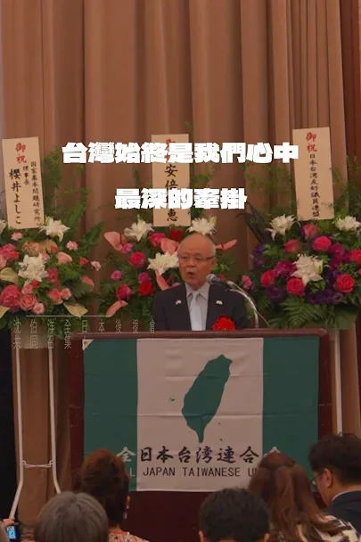
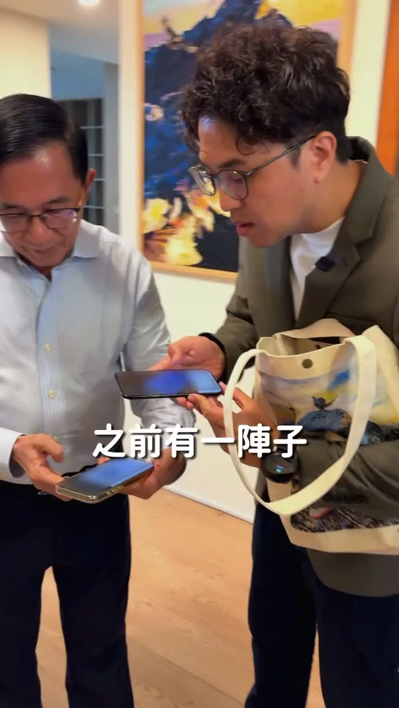
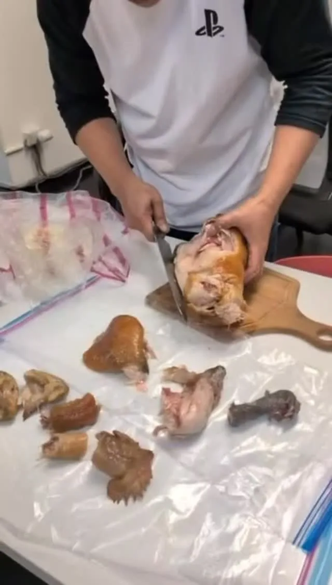

沈伯洋PumaPumaShen

《Taipei Flowing Smoothly 𝙁𝙪𝙩𝙪𝙧𝙚 𝙎𝙤𝙤𝙣》2026 Forward-Looking Shen Po-yang Official Campaign Song X C...
Accounts
| 平台 | 帳號 | 已收錄貼文 | 最後更新 |
|---|---|---|---|
| 官網 | https://puma.taipei/ | 44 | 2026-09-16 00:00 |
| https://www.facebook.com/puma.taipei/ | 120 | 2026-09-16 16:13 | |
| https://www.facebook.com/pumashen/ | 64 | 2026-09-11 19:15 | |
| https://www.instagram.com/pumashen/ | 105 | 2026-09-16 16:14 | |
| Threads | https://www.threads.com/@pumashen | 143 | 2026-09-16 16:13 |
| YouTube | https://www.youtube.com/@PumaShen | 101 | 2026-09-17 09:13 |
| X | https://x.com/pumashen | 1 | 2026-09-09 12:49 |
| LINE 官方帳號 | https://join.puma.taipei/line/UkfBBgZ2 | 0 | — |
Timeline
顯示 578 / 578 則

《Taipei Flowing Smoothly 𝙁𝙪𝙩𝙪𝙧𝙚 𝙎𝙤𝙤𝙣》2026 Forward-Looking Shen Po-yang Official Campaign Song X C...
Traffic issues must be solved through multi-faceted policies. Municipal governance is about facin...


我主張 TPASS 月票升級，納入共享電動機車！不只省下交通費，從家裡到車站也更方便！ ⠀ 台北的捷運很方便，但不是每位市民都住在捷運站旁。走到車站、等公車、轉乘，每天花在路上的時間，都是通勤族的生活成本。 ⠀ 我希望台北成為一座讓人安心生活的城市，而這份安心，就從改善每天會遇到的小事開始。 ⠀ 因此，我提出將共享電動機車納入 TPASS，讓有需要的人，不必再額外負擔買車、養車的費用。 ⠀ 好的政策，不只要回應市民的需求，也要有完整的配套。借還車是否方便、停放會不會影響周邊居民，都要一起考量。 ⠀ 為了減輕通勤族的交通負擔，我提出三項具體措施： ⠀ ▎TPASS 加碼共享電動機車 ⠀⠀ 持有 TPASS、符合騎乘資格的市民，每天享有固定次數、每次前 10 分鐘免費的共享電動機車服務。 ⠀ 先由市府出資試辦三個月，依據接駁需求、車輛供應與使用者回饋調整服務內容，再參考YouBike 模式，與中央協商後續的費用分攤。 ⠀ ▎讓共享機車進停車場，借還更方便 ⠀ 由停管處盤點公有及委外經營的路外機車停車空間，依需求設置據點，並鼓勵私人停車場加入。 ⠀ 同時檢討久停、移車時限，減少共享機車占用路邊車格的情況，讓使用者借還方便，也照顧周邊居民的停車需求。 ⠀ ▎使用者體驗優先，讓市場自由競爭 ⠀ 無論是現有或新進業者，只要符合資格，都適用相同的補助規則。讓市民自由選擇，也讓業者靠更好的服務爭取使用者。 ⠀ 通勤順一點、開銷少一點，生活少一點壓力，就有多一點時間陪伴家人。 ⠀ 讓台北成為安心生活的城市，要從改善市民的日常做起。 ⠀ 我會持續聆聽市民的心聲，提出符合市民期待的政見，讓大家出門更便利，回家多一點從容！ ⠀ #台北順起來 #你的市長沈伯洋

自行車不該只是週末的休閒選擇，也可以成為安全、方便的日常通勤工具！ ⠀ 台北的河濱自行車道環境舒適，但騎自行車通勤，仍有不少困難。 ⠀ 許多市民向我反映，河濱路段相對順暢，一進入市區，卻常遇到車道中斷、標線不清、停車不便等問題。 ⠀ 這些看似零碎的不便，日積月累，可能讓人就此打消自行車通勤的念頭。 ⠀ 2025年，台北YouBike租借量將近8000萬車次，顯示自行車的使用需求持續增加，但現有路網與相關設施卻沒有跟上。 ⠀ 因此，我提出「接、養、補」三個方向，逐步全面改善台北的自行車通勤環境。 ⠀ ▎「接」起斷點，讓河濱與市區連起來 ⠀ 基隆河兩岸擁有完整的河濱自行車道，但跨河、越堤的動線仍不方便，原本近在眼前的距離，實際上卻得繞上一大圈。 ⠀ 為了改善這個問題，我主張推動「迎風—港墘跨基隆河自行車專用橋」，串聯迎風河濱公園與內湖科技園區。 ⠀ 這座橋將供自行車與行人通行，並規劃無障礙動線、夜間照明及安全設施，也讓內科上班族往返河岸更方便。 ⠀ ▎「養」好路網，建立一致的維護標準 ⠀ 針對鋪面、標線、夜間照明、指標系統及越堤動線，建立一致的維護標準，每季分區檢查並公開結果。 ⠀ 發現需要改善的路段，市府應排定修繕順序及時程，不能總是等到市民反映，甚至發生事故後才處理。 ⠀ 遇到颱風或豪雨，自行車道的封閉與開放資訊也要即時更新至市府平台及導航系統，讓通勤族提早掌握路況、調整路線！ ⠀ ▎「補」足服務，讓YouBike更適合通勤 ⠀ 我提出平日08:00-10:00、17:00-19:00，補助YouBike2.0E前30分鐘免費，並依照各地的使用情況，調整站點、車輛數量和尖峰時段的調度。 ⠀ 為了讓市民方便更衣盥洗，我規劃優先在河濱、轉乘節點及跨河橋兩端設置運動驛站，也鼓勵辦公大樓增設淋浴間和自行車停放區。 ⠀ 讓自行車成為日常的通勤選擇，需要把每個環節都照顧到：路線銜接、騎乘安全、抵達後服務。 ⠀ 我會繼續聽市民的聲音，將問題逐項改善，讓更多人願意騎自行車出門，也能安心抵達目的地！ ⠀ #台北順起來 #你的市長沈伯洋
0916受訪-1 #受訪 #民進黨台北市議員競總成立 #賴俊翰 #民進黨中山大同四位全壘打

士林華榮市場，從早到晚，有兩種完全不同的熱鬧。 ⠀ 早上是菜市場，蔬菜、鮮魚、肉品，撐起士林人的一日三餐；傍晚攤位換班，甜不辣、水煎包、香腸陸續開張，成為在地人才知道的美食街。不少攤商在這裡做了四、五十年，顧的不只是生意，也是幾代士林人的味覺記憶。 ⠀ 今天走進市場，沿路聽到的招呼聲，就是傳統市場最珍貴的人情味。攤商記得熟客要買什麼、居民也都願意停下來聊幾句生活。 ⠀ 我有一位助理的阿媽從小都會帶他來「華榮街」，聽說前天阿媽才在講「那麼小條，沈伯洋不會來啦！」原來，是因為阿媽前幾年開刀後不太出遠門，一直在等我們來。 ⠀ 我們一定會盡全力，走遍台北的大小市場。因為在市場，你可以聽見最在地的聲音！ ⠀ 謝謝每一位熱情打招呼、願意停下腳步的攤商與市民，也謝謝我們今天一起出動的士林北投小隊 士林北投林世宗議員、 林延鳳 議員、 陳慈慧 慈續服務 最貼心 議員、 陳賢蔚 議員、鍾佩玲 台北市議員，以及華榮市場自治會莊勝宏會長！ #台北順起來 #你的市長沈伯洋

From Taipei to Tokyo, thank you for every bit of support across the sea. Thank you to our friends...

台日合作，不只持續對話，更要一步步走向制度化。 ⠀ 民進黨與日本自民黨在東京舉行「台日執政黨外交防衛政策對話」；原定30分鐘的「2+2會議」，更延長至近兩個小時，充分交換彼此的經驗與想法。 ⠀ 面對中國對台灣及區域的威脅，我們討論的不僅限於傳統軍事安全，更深入到外交國防、經濟安保以及法律戰、網路戰、假訊息與認知作戰等領域。台灣與日本面對相似挑戰，更應深化案例與經驗交流，共同提升民主社會的防護能力。 ⠀ 我們也談到無人機非紅供應鏈、海底電纜防護、醫療合作與共同防災，並進一步從防衛、經濟等硬實力，延伸到教育、文化及內容產業的軟實力合作。 ⠀ 安全需要共同守護，韌性也需要長期累積。台日合作正從過去的對話逐步走向「制度化」與「MOU簽訂」，期待台日合作從交流走向制度、從國家深化到城市，讓彼此成為更穩固、更有韌性的民主夥伴。 ⠀ 謝謝自民黨外交部會長高木啓議員、台灣政策檢討專案小組鈴木馨祐召集人、台灣政策檢討專案小組山下貴司代理召集人等日方夥伴，也謝謝郭國文、吳思瑤、陳冠廷 Kuan-Ting Chen、郭昱晴委員同行交流。 台日友好，持續向前。
明晚一起逛公館夜市！ ⠀ 9/15（二） ⠀ 19:30 📍公館夜市（汀州路三段253號）

@pumashen:這是大家敲碗的合體嗎？！ 今天和 @uehata1204 上畠議員 一起到澀谷 我向他請教 日本吸煙區做了這麼久 有什麼心得和檢討？ 各地又是怎麼做 吸煙區的管理 聊了好多好多 再用一支影片跟大家分享 他今天也跟我分享了 飲食管理的心得 但我覺得我做不到！！ 照片裡的他 剛選上議員25歲 照片裡的我 剛擔任立法委員41歲 我們互相簽名交換 是我們友情的象徵！

市長，我給你聽好的！
我主張 TPASS 月票升級，納入共享電動機車！不只省下交通費，從家裡到車站也更方便！ ⠀ 台北的捷運很方便，但不是每位市民都住在捷運站旁。走到車站、等公車、轉乘，每天花在路上的時間，都是通勤族的生活成本。 ⠀ 我希望台北成為一座讓人安心生活的城市，而這份安心，就從改善每天會遇到的小事開始。 ⠀ 因此，我提出將共享電動機車納入 TPASS，讓有需要的人，不必再額外負擔買車、養車的費用。 ⠀ 好的政策，不只要回應市民的需求，也要有完整的配套。借還車是否方便、停放會不會影響周邊居民，都要一起考量。 ⠀ 為了減輕通勤族的交通負擔，我提出三項具體措施： ⠀ ▎TPASS 加碼共享電動機車 ⠀⠀ 持有 TPASS、符合騎乘資格的市民，每天享有固定次數、每次前 10 分鐘免費的共享電動機車服務。 ⠀ 先由市府出資試辦三個月，依據接駁需求、車輛供應與使用者回饋調整服務內容，再參考YouBike 模式，與中央協商後續的費用分攤。 ⠀ ▎讓共享機車進停車場，借還更方便 ⠀ 由停管處盤點公有及委外經營的路外機車停車空間，依需求設置據點，並鼓勵私人停車場加入。 ⠀ 同時檢討久停、移車時限，減少共享機車占用路邊車格的情況，讓使用者借還方便，也照顧周邊居民的停車需求。 ⠀ ▎使用者體驗優先，讓市場自由競爭 ⠀ 無論是現有或新進業者，只要符合資格，都適用相同的補助規則。讓市民自由選擇，也讓業者靠更好的服務爭取使用者。 ⠀ 通勤順一點、開銷少一點，生活少一點壓力，就有多一點時間陪伴家人。 ⠀ 讓台北成為安心生活的城市，要從改善市民的日常做起。 ⠀ 我會持續聆聽市民的心聲，提出符合市民期待的政見，讓大家出門更便利，回家多一點從容！ ⠀ #台北順起來 #你的市長沈伯洋
自行車不該只是週末的休閒選擇，也可以成為安全、方便的日常通勤工具！ ⠀ 台北的河濱自行車道環境舒適，但騎自行車通勤，仍有不少困難。 ⠀ 許多市民向我反映，河濱路段相對順暢，一進入市區，卻常遇到車道中斷、標線不清、停車不便等問題。 ⠀ 這些看似零碎的不便，日積月累，可能讓人就此打消自行車通勤的念頭。 ⠀ 2025年，台北YouBike租借量將近8000萬車次，顯示自行車的使用需求持續增加，但現有路網與相關設施卻沒有跟上。 ⠀ 因此，我提出「接、養、補」三個方向，逐步全面改善台北的自行車通勤環境。 ⠀ ▎「接」起斷點，讓河濱與市區連起來 ⠀ 基隆河兩岸擁有完整的河濱自行車道，但跨河、越堤的動線仍不方便，原本近在眼前的距離，實際上卻得繞上一大圈。 ⠀ 為了改善這個問題，我主張推動「迎風—港墘跨基隆河自行車專用橋」，串聯迎風河濱公園與內湖科技園區。 ⠀ 這座橋將供自行車與行人通行，並規劃無障礙動線、夜間照明及安全設施，也讓內科上班族往返河岸更方便。 ⠀ ▎「養」好路網，建立一致的維護標準 ⠀ 針對鋪面、標線、夜間照明、指標系統及越堤動線，建立一致的維護標準，每季分區檢查並公開結果。 ⠀ 發現需要改善的路段，市府應排定修繕順序及時程，不能總是等到市民反映，甚至發生事故後才處理。 ⠀ 遇到颱風或豪雨，自行車道的封閉與開放資訊也要即時更新至市府平台及導航系統，讓通勤族提早掌握路況、調整路線！ ⠀ ▎「補」足服務，讓YouBike更適合通勤 ⠀ 我提出平日08:00-10:00、17:00-19:00，補助YouBike2.0E前30分鐘免費，並依照各地的使用情況，調整站點、車輛數量和尖峰時段的調度。 ⠀ 為了讓市民方便更衣盥洗，我規劃優先在河濱、轉乘節點及跨河橋兩端設置運動驛站，也鼓勵辦公大樓增設淋浴間和自行車停放區。 ⠀ 讓自行車成為日常的通勤選擇，需要把每個環節都照顧到：路線銜接、騎乘安全、抵達後服務。 ⠀ 我會繼續聽市民的聲音，將問題逐項改善，讓更多人願意騎自行車出門，也能安心抵達目的地！ ⠀ #台北順起來 #你的市長沈伯洋

台北交通順起來！綠色通勤選項＋１記者會

0916受訪 #受訪 #自行車道政策 #通學區零死亡 #交通零重傷 #兒童保護 #法律先行 #營養午餐 #洋流是暖的 #大巨蛋老鼠 #商圈活絡政策 #「微森林」計畫 #「山徑」計畫 #明治橋 # 雙城論壇

@pumashen:拜會阿扁總統， 當然要加Line、打電話！ ⠀ 還好阿扁總統10點就被收手機， 時間會跟其邁市長錯開XD

從台北到東京，謝謝每一份跨海的支持。 謝謝日本後援會的朋友，持續關心台北，成為我的重要力量。 #台北順起來 #你的市長沈伯洋
明晚一起逛公館夜市！ ⠀ 9/15（二） ⠀ 19:30 📍公館夜市（汀州路三段253號）

0914受訪 #受訪 #國會外交 #城市外交 #日本後援會 #運動驛站 #兒童保護 #無菸城市 #日本友台市議員訪台

跨越兩千公里，日本後援會正式成立！ ⠀ 後援會成立現場，許多沒有報到名的鄉親特別來到現場支持，後援會也因此開放大家入場。近四百位在日鄉親齊聚一堂，大家的熱情，真的讓我非常感動。 ⠀ 感謝趙中正、陳天隆、謝美香三位國策顧問出面號召也擔任全日本後援會共同召集人，也謝謝立院好同事郭國文委員、郭昱晴委員，以及競選總幹事吳思瑤，特別來到現場相挺。更要謝謝所有籌備前輩，以及長期為台灣發聲的在日僑界。大家始終是台日民間最穩固的橋樑，讓更多日本朋友理解台灣、支持台灣。 ⠀ 海外後援會不只在選舉期間發揮力量，我期待未來更能成為台北在海外的「眼睛」，串聯民間團體、市民與產業，成為城市外交的重要橋樑。 ⠀ 安倍晉三前首相當年提出「台灣有事，日本有事」，以及對印太區域的戰略想像，對當時投入相關研究的我而言，是一劑很大的強心針，也讓更多人開始關注台灣與區域安全。因為台灣有值得世界看見的，不只有半導體和夜市。我們的民主發展、文化融合與治理經驗，也能成為其他城市借鏡的力量。 ⠀ 現場，我們一起為達摩點睛。這一筆，點下的是決心，也是承諾。 ⠀ 我要讓台北成為一座有國際視野，也真正照顧市民日常的城市；讓每位海外鄉親回到台北時，都能感受到：這座城市，又比上次更好了一點。 ⠀ 日本後援會，正式啟動！ 東京到台北，一起向前！ #日本後援會 #台北順起來 #你的市長沈伯洋
I Tried Out a Sports Station, and Heard What Runners in Japan Have to Say. Taipei has riverside p...
@pumashen:我主張 TPASS 月票升級，納入共享電動機車！不只省下交通費，從家裡到車站也更方便！ ⠀ 台北的捷運很方便，但不是每位市民都住在捷運站旁。走到車站、等公車、轉乘，每天花在路上的時間，都是通勤族的生活成本。 ⠀ 我希望台北成為一座讓人安心生活的城市，而這份安心，就從改善每天會遇到的小事開始。 ⠀ 因此，我提出將共享電動機車納入 TPASS，讓有需要的人，不必再額外負擔買車、養車的費用。 ⠀ 好的政策，不只要回應市民的需求，也要有完整的配套。借還車是否方便、停放會不會影響周邊居民，都要一起考量。 ⠀ 為了減輕通勤族的交通負擔，我提出三項具體措施： ⠀ ▎TPASS 加碼共享電動機車 ⠀⠀ 持有 TPASS、符合騎乘資格的市民，每天享有固定次數、每次前 10 分鐘免費的共享電動機車服務。 ⠀ 先由市府出資試辦三個月，依據接駁需求、車輛供應與使用者回饋調整服務內容，再參考YouBike 模式，與中央協商後續的費用分攤。 ⠀
@pumashen:自行車不該只是週末的休閒選擇，也可以成為安全、方便的日常通勤工具！ ⠀ 台北的河濱自行車道環境舒適，但騎自行車通勤，仍有不少困難。 ⠀ 許多市民向我反映，河濱路段相對順暢，一進入市區，卻常遇到車道中斷、標線不清、停車不便等問題。 ⠀ 這些看似零碎的不便，日積月累，可能讓人就此打消自行車通勤的念頭。 ⠀ 2025年，台北YouBike租借量將近8000萬車次，顯示自行車的使用需求持續增加，但現有路網與相關設施卻沒有跟上。 ⠀ 因此，我提出「接、養、補」三個方向，逐步全面改善台北的自行車通勤環境。 ⠀ ▎「接」起斷點，讓河濱與市區連起來 ⠀ 基隆河兩岸擁有完整的河濱自行車道，但跨河、越堤的動線仍不方便，原本近在眼前的距離，實際上卻得繞上一大圈。 ⠀ 為了改善這個問題，我主張推動「迎風—港墘跨基隆河自行車專用橋」，串聯迎風河濱公園與內湖科技園區。 ⠀ 這座橋將供自行車與行人通行，並規劃無障礙動線、夜間照明及安全設施，也讓內科上班族往返河岸更方便。 ⠀

市長你給我聽好了記者會

@pumashen:公館夜市... 你們太猛了！ ⠀ 謝謝大家和我一起逛公館夜市 然後都有在夜市吃飽 記得要補充水分 ⠀ 我剛剛也和同仁們吃了晚餐 大家明天繼續加油 ⠀ 倒數74天！

@pumashen:早上在華榮市場 有支持者送給我們兩隻雞 我有帶回辦公室 給大家補一下！ ⠀ 大家送我們的東西 我們一定都會好好善待！

0915受訪 #受訪 #公館夜市 #小巨蛋外牆 #APEC會議 #陳水扁 #台北市治理 #王偉忠專訪影片 #基泰大直案受災戶
@pumashen:明晚一起逛公館夜市！ ⠀ 9/15（二） ⠀ 19:30 📍公館夜市（汀州路三段253號）

一座城市，如何讓海外人才願意回來？ ⠀ 與在日青年、留學生交流後，我更確定答案除了薪水，還有一座城市能不能讓人住得起、養得起孩子，也看得見未來。 ⠀ 這趟參訪，我觀察東京的運動驛站、吸菸區與徒步空間。每座城市都有值得學習的地方，台北應該吸收各國經驗，走出自己的道路，成為「世界的台北」。 ⠀ 我要讓台北同時擁有好的生活與更多機會。 ⠀ 從婚育宅、青年宅、家長喘息服務，到運動驛站、河岸與山徑；讓想回台北成家的人住得下來，也讓每個人每天省下三十分鐘，把時間留給自己與家人。 ⠀ 面對未來的北士科，市府更要提前整合用電、交通、住宅、托育、教育與公共服務。我提出「雙站合一」，把變電所與電動公車調度站整合規劃，也要讓北士科未來六萬名就業人口，不只工作在台北市，更願意把生活、消費都留在台北市。 ⠀ 我也將推動青年 AI 使用支持方案，透過 AI 教育錢包，依學習、專業及創業需求分級支持；並以青年圓夢計畫，幫助青年走向海外，再把經驗、人脈與新的可能帶回台北。 ⠀ 市府要成為新創的第一個客戶，也要成為青年勇敢追夢時，背後最可靠的夥伴。 ⠀ 讓台北人才回得來、企業進得來、青年看得見未來。 ⠀ #台北順起來 #你的市長沈伯洋

@pumashen:體驗完運動驛站 結果時間大delay 趕緊跑回驛站換衣服 被無情幕僚錄下 拍攝者不救